Model Selection
Xiyu Peng
2025-04-17
Source:vignettes/articles/Model_Selection.Rmd
Model_Selection.RmdIn this tutorial, I will introduce how to do model selection and tune
parameters when applied SpaTopic to your own imaging
dataset.
Set-up
Again, we use the lung cancer image to illustrate how to use
SpaTopic. The data object here can be download from here,
with original public resources available on the nanostring
website.
## We use Seurat v5 package to visualize the results.
## If you still use Seurat v4, you will have the error
library(Seurat, quietly = TRUE);packageVersion("Seurat")
#> [1] '5.3.0'
## Load the Seurat object for the image
load("~/Documents/Research/github/SpaTopic_data/nanostring_example.rdata")
## for large dataset
options(future.globals.maxSize = 1e9)Like before, we prepare the dataset as the input of the algorithm.
library(SpaTopic)
dataset<-Seurat5obj_to_SpaTopic(object = nano.obj, group.by = "predicted.annotation.l1", image = "image1")
#> [16:41:56] [SpaTopic INFO] Successfully extracted 100149 cells with coordinates and annotations
head(dataset)
#> image X Y type
#> 1_1 image1 4215.889 158847.7 Dendritic
#> 2_1 image1 6092.889 158834.7 Macrophage
#> 3_1 image1 7214.889 158843.7 Neuroendocrine
#> 4_1 image1 7418.889 158813.7 Macrophage
#> 5_1 image1 7446.889 158845.7 Macrophage
#> 6_1 image1 3254.889 158838.7 CD4 TConvergence of Gibbs Sampling
This time we will track and keep all output from Gibbs sampling
algorithm with trace = TRUE. Here we also reset the
parameters for Gibbs sampling (thin = 20, burnin = 0, niter = 200): we
run Gibbs sampling train in first 4000 iterations and take 200 posterior
samples every 20 iterations.
Important Note for running
With trace = TRUE, we will compute the log likelihood
for every posterior samples. However, it takes time on large dataset and
we recommend tuning your parameters on one or a few images instead of
directly on the whole big image datasets.
## it take about 3-4min to run
library(SpaTopic)
library(sf)
#> Linking to GEOS 3.13.0, GDAL 3.8.5, PROJ 9.5.1; sf_use_s2() is TRUE
system.time(gibbs.res<-SpaTopic_inference(dataset, ntopics = 7, sigma = 50,
region_radius = 400,trace = TRUE, thin = 20, burnin = 0, niter = 200))
#> [16:41:56] [SpaTopic INFO] Number of cells per image: 100149
#> [16:41:56] [SpaTopic INFO] Start initialization...
#> [16:41:56] [SpaTopic INFO] Number of Initializations: 10
#> [16:42:16] [SpaTopic RESULT] Min perplexity during initialization: 11.6302
#> [16:42:16] [SpaTopic INFO] Number of region centers selected: 971
#> [16:42:16] [SpaTopic INFO] Average number of cells per region: 103.14
#> [16:42:16] [SpaTopic PROGRESS] Initialization complete. Starting Gibbs sampling...
#> [16:45:10] [SpaTopic COMPLETE] Gibbs sampling completed successfully
#> [16:45:10] [SpaTopic RESULT] Final model perplexity: 11.3127
#> user system elapsed
#> 193.209 0.589 194.050Now we can plot the log likelihood across different iterations.
library(ggplot2)
### plot the log likelihood of the method
trace_result<-data.frame(loglike = gibbs.res$loglike.trace, iteration = seq(0, 4000, 20))
ggplot(trace_result, aes(x = iteration, y = loglike))+ geom_line()+theme_minimal()+geom_vline(xintercept = 1000, linetype = "dashed", color = "red") + geom_vline(xintercept = 2000, color = "blue")Based on the plot, we found the algorithm converges around 1000
iterations. Thus it is safe to set burnin = 1000 (by
default) for this dataset, starting taking posterior samples after 1000
iterations. Or a more conserved choice is burnin = 2000,
which is used for the analysis results in the paper.
With trace = TRUE, we also output DIC for model
selection.
print(gibbs.res)
#> SpaTopic Results
#> ----------------
#> Number of topics: 7
#> Perplexity: 11.31266
#>
#> DIC: 998805.7
#>
#> Topic Content(Topic distribution across cell types):
#> topic1 topic2 topic3 topic4
#> Alveolar Epithelial Type 1 0.034183965 6.550357e-03 4.691796e-06 0.028458815
#> Alveolar Epithelial Type 2 0.025964979 3.606789e-02 4.691796e-06 0.017168270
#> Artery 0.007522377 2.640208e-06 4.691796e-06 0.001841738
#> B 0.019249466 1.610527e-04 3.496373e-01 0.015584528
#> Basal 0.024461506 7.790225e-01 2.069082e-03 0.087874670
#> topic5 topic6 topic7
#> Alveolar Epithelial Type 1 3.094079e-06 6.029981e-06 0.004772139
#> Alveolar Epithelial Type 2 1.268572e-04 6.029981e-06 0.006764303
#> Artery 6.438777e-03 1.797537e-02 0.006522828
#> B 1.695864e-02 6.397810e-03 0.022822353
#> Basal 5.696199e-03 6.029981e-06 0.006583197
#> ...
#>
#> Use $Z.trace for posterior probabilities of topic assignments for each cell
#> Use $cell_topics for final topic assignments for each cell
#> Use $parameters for accessing model parametersNumber of Topics
Here, we will illustrate how to use DIC to select number of topics.
We first run the model under different number of topics, each collecting
100 posterior samples after 1000 burnin iterations. For higher number of
topics, it may take longer time to converge, thus we set
burnin = 2000 instead of the default.
## PRE-RUN the result
for(topic in 2:9){
gibbs.res<-SpaTopic_inference(dataset, ntopics = topic, sigma = 50, region_radius = 400, trace = TRUE, thin = 20, burnin = 2000, niter = 100)
filename<-paste0("~/Documents/Research/github/SpaTopic_data/nanostring_niter100_K",topic,".rds")
saveRDS(gibbs.res, file = filename)
}
### Extract result object
result<-list()
for (topic in 2:9) {
filename<-paste0("~/Documents/Research/github/SpaTopic_data/nanostring_niter100_K",topic,".rds")
result[[topic]]<- readRDS(filename)
}Here, we plot DIC for each selected number of topics.
DICs <- unlist(lapply(result, function(x) x$DIC))
DIC_df <- data.frame(
Topics = 2:9,
DIC = DICs
)
ggplot(DIC_df, aes(x = Topics, y = DIC))+ geom_line()+theme_minimal()+geom_vline(xintercept = 7, color = "blue")It may be time consuming to compute DIC. You may also check the perplexity of the last posterior if working on large dataset. Just like likelihood, as the number of topics increases, the model likelihood generally improves, leading to a decrease in perplexity. However, a stable perplexity score can indicate an optimal number of topics, providing a balance between model complexity and fit.
Perplexity <- unlist(lapply(result, function(x) x$Perplexity))
perx_df <- data.frame(
Topics = 2:9,
Perplexity = Perplexity
)
ggplot(perx_df, aes(x = Topics, y = Perplexity))+ geom_line()+theme_minimal()+geom_vline(xintercept = 7, color = "blue")
Based on our model selection analysis, k = 7 topics provides an optimal balance between model fit and interpretability. This provides biologically meaningful spatial topics that align well with known tissue structures and cellular interactions in the tumor microenvironment. Choosing number of topics (clusters) sometimes is subjective since there is often no real number of clusters in real biological dataset.
## Gibbs sampling for SpaTopic
system.time(gibbs.res<-SpaTopic_inference(dataset, ntopics = 7, sigma = 50, region_radius = 400))
#> [16:45:11] [SpaTopic INFO] Number of cells per image: 100149
#> [16:45:11] [SpaTopic INFO] Start initialization...
#> [16:45:11] [SpaTopic INFO] Number of Initializations: 10
#> [16:45:31] [SpaTopic RESULT] Min perplexity during initialization: 11.6302
#> [16:45:31] [SpaTopic INFO] Number of region centers selected: 971
#> [16:45:31] [SpaTopic INFO] Average number of cells per region: 103.14
#> [16:45:31] [SpaTopic PROGRESS] Initialization complete. Starting Gibbs sampling...
#> [16:46:09] [SpaTopic COMPLETE] Gibbs sampling completed successfully
#> [16:46:09] [SpaTopic RESULT] Final model perplexity: 11.3156
#> user system elapsed
#> 57.310 0.187 57.568
## In the new version of SpaTopic, the final topic assignments is in cell topics.
nano.obj$Topic <- as.factor(gibbs.res$cell_topics)
library(ggplot2)
palatte<- c("#0000FFFF","#FF0000FF","#00FF00FF","#009FFFFF","#ff00b7fa","#005300FF","#FFD300FF")
ImageDimPlot(nano.obj, fov = "lung5.rep1", group.by = "Topic", axes = TRUE,
dark.background = T,cols = palatte) + ggtitle("Topic") 
Parameter Choice
When running SpaTopic, both sigma and
region_radius should be set based on image resolution and
tissue complexity:
For whole-slide imaging applications, select
region_radiusto include at least 100 cells per region on average. Note that different imaging platforms may report spatial coordinates in either pixels or microns, so adjust parameters accordingly.The
sigmaparameter should be tuned in conjunction withregion_radius. Empirically, we’ve found that settingsigmato approximately the square root ofregion_radiusworks well as a starting point for parameter tuning.Small
sigmaandregion_radiuswill focus on more local structure while ignoring global structure.